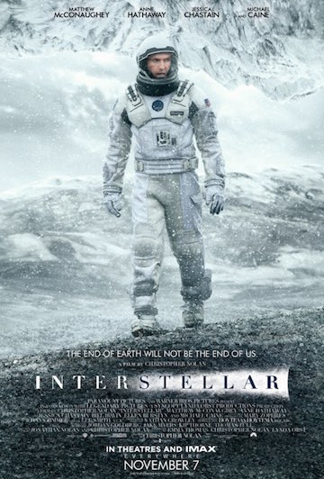

Popular films
Most read reviews
Exquisite Piece Of Filmmaking
Written bySmashingUKProductions
An exquisite piece of filmmaking from writer-director Jeff Nichols, bolstered by powerful performances from Matthew McConaughey, Reece Witherspoon, Sam Shephard, Tye Sheridan and Jacob Lofland. 'Mud' is a beautifully shot film that blends crime, drama and romance into a heartfelt plot that follows two young boys who encounter a fugitive who needs their help. Set against some of the most unique and stunning locations ever used in a film, 'Mud' is reminiscent of flicks including 'Stand by Me' and 'Night of the Hunter'. A realistic and gripping coming-of-age tale that not only stands as being one of the best films of 2012, but one of the best dramas of the past decade.
'Interstellar'
Written byTyler Miller
'Interstellar' was incredible. The visuals, the score, the acting, were all amazing. The plot is definitely one of the most original I've seen in a while. Most of the critic reviews have said that some bits are a little too unbelievable, but I have to disagree. Yes, there were some parts that were definitely in the "fi" part of sci-fi. But the thing is, 'Interstellar' deals with concepts that we know very little about. We have no idea what the 4th or 5th dimension is like, or what it would be like to go through a wormhole or a black hole. I don't think it's fair to call something unbelievable, when we have absolutely no idea what WOULD be believable in those circumstances. Either way, excellent writing from the Nolan brothers. The visuals were outstanding, and will no doubt be nominated for an Oscar. The performances were excellent, though nothing Oscar worthy, as is the case with most of Nolan's films ('The Dark Knight' being the obvious exception). Hans Zimmer's score was amazing and blended perfectly with the film. All in all, 'Interstellar' is an excellent movie, which I personally think is Nolan's most beautiful film to date.